扁平插画：原图 / 旧版 14 色 / 新版同预算 / 新版默认 20 色
保留人物特征的同时简化区域。边缘抗锯齿颜色不计入主体色板预算。指标只描述碎块，不代表审美评分。
实测与已知局限01_portrait.jpg
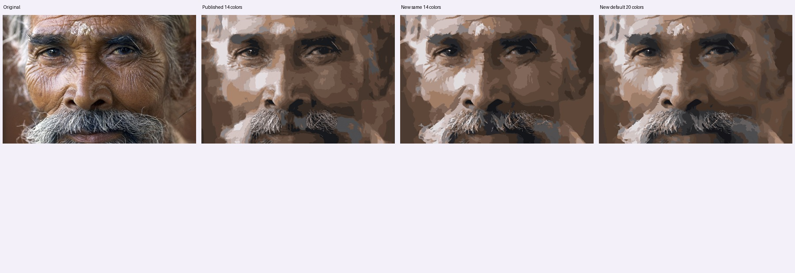
9.51 秒 · 新版 PNG · 同预算 14 色
照片署名
Jorge Royan · CC BY-SA 3.0 · 来源02_portrait.jpg
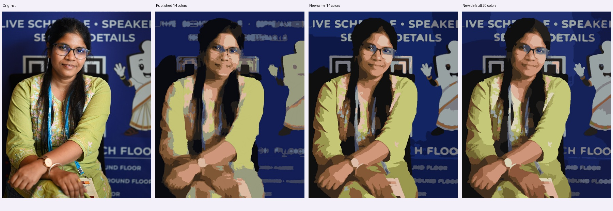
10.13 秒 · 新版 PNG · 同预算 14 色
照片署名
JyotiPN · CC BY-SA 4.0 · 来源03_portrait.jpg
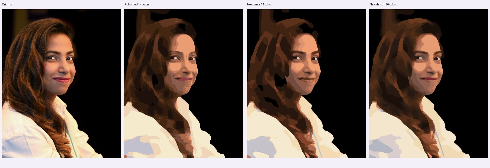
8.44 秒 · 新版 PNG · 同预算 14 色
照片署名
JyotiPN · CC BY-SA 4.0 · 来源04_portrait.jpg
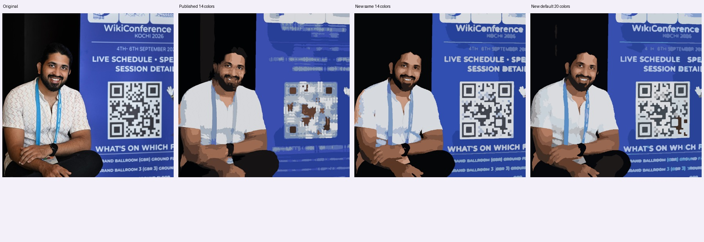
11.82 秒 · 新版 PNG · 同预算 14 色
照片署名
JyotiPN · CC BY-SA 4.0 · 来源05_portrait.jpg
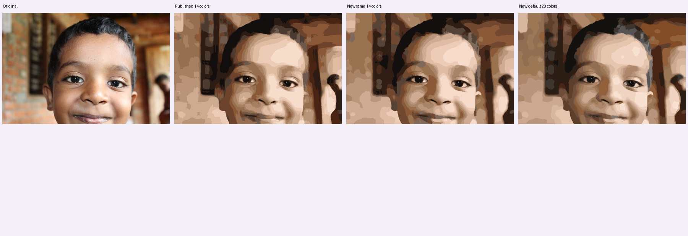
7.11 秒 · 新版 PNG · 同预算 14 色
照片署名
Keerikkadanjose · CC0 · 来源06_portrait.jpg
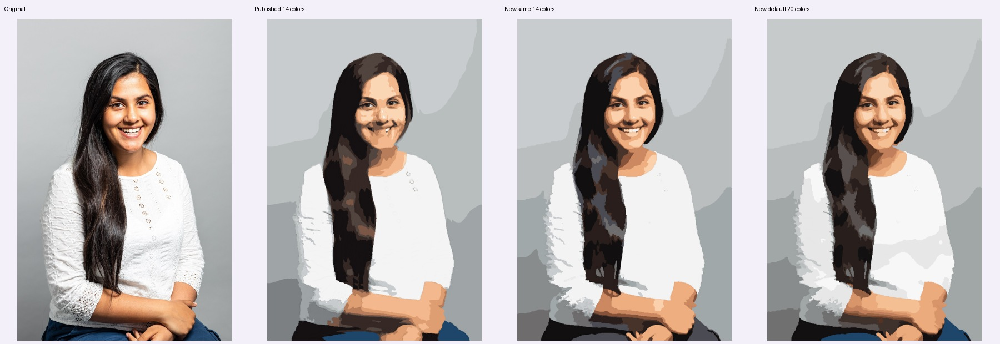
7.94 秒 · 新版 PNG · 同预算 14 色
照片署名
Justine Desmond / Brighton & Hove City Council · OGL 3 · 来源07_portrait.jpg
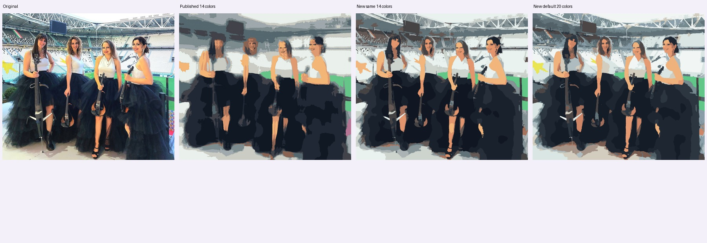
13.90 秒 · 新版 PNG · 同预算 14 色
照片署名
Luisa Cello · CC0 · 来源08_portrait.jpg
12.27 秒 · 新版 PNG · 同预算 14 色
照片署名
Congress of the Philippines · Public domain · 来源13_portrait.jpg
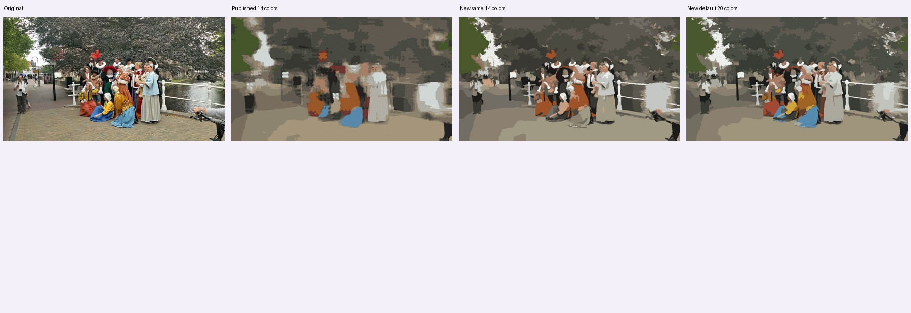
9.72 秒 · 新版 PNG · 同预算 14 色
照片署名
Donald Trung Quoc Don (Chữ Hán: 徵國單) - Wikimedia Commons - © CC BY-SA 4.0 International.(Want to use this image?)Original publication 📤: --Donald Trung 『徵國單』 (No Fake News 💬) (WikiProject Numismatics 💴) (Articles 📚) 22:58, 14 November 2019 (UTC) · CC BY-SA 4.0 · 来源14_portrait.jpg
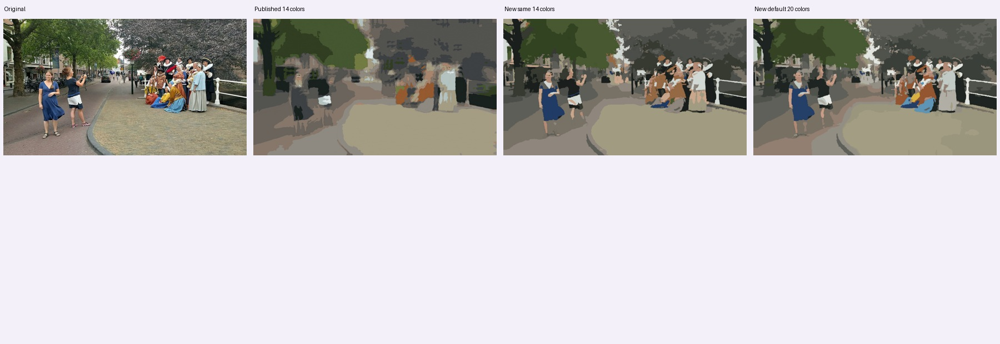
8.05 秒 · 新版 PNG · 同预算 14 色
照片署名
Donald Trung Quoc Don (Chữ Hán: 徵國單) - Wikimedia Commons - © CC BY-SA 4.0 International.(Want to use this image?)Original publication 📤: --Donald Trung 『徵國單』 (No Fake News 💬) (WikiProject Numismatics 💴) (Articles 📚) 22:58, 14 November 2019 (UTC) · CC BY-SA 4.0 · 来源15_landscape.jpg
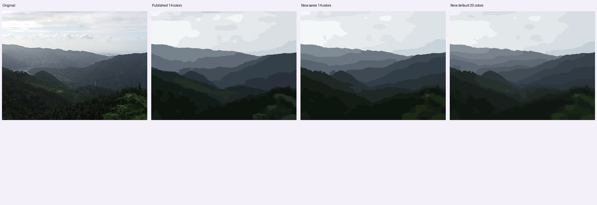
6.84 秒 · 新版 PNG · 同预算 14 色
照片署名
Kai3952 · CC BY-SA 4.0 · 来源16_landscape.jpg
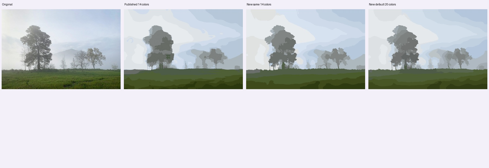
7.79 秒 · 新版 PNG · 同预算 14 色
照片署名
Sergei Gussev · CC BY 4.0 · 来源17_architecture.jpg
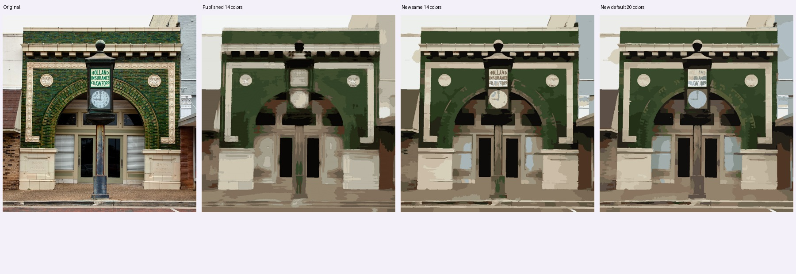
9.66 秒 · 新版 PNG · 同预算 14 色
照片署名
Carol M. Highsmith · Public domain · 来源18_architecture.jpg
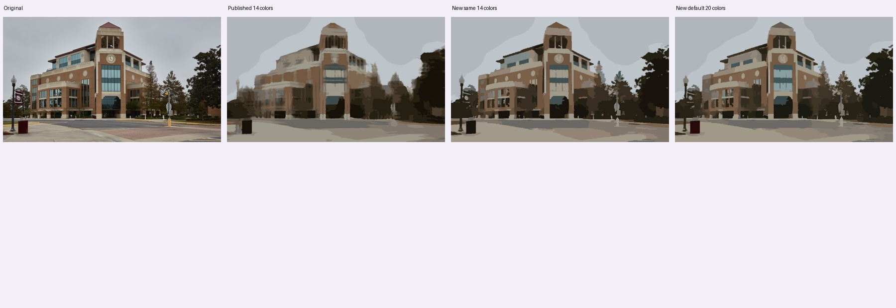
3.18 秒 · 新版 PNG · 同预算 14 色
照片署名
Carol M. Highsmith · Public domain · 来源19_animal.jpg
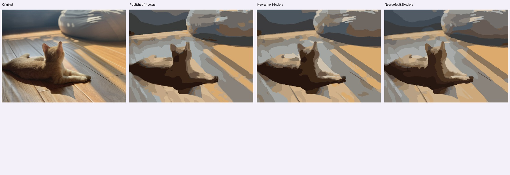
3.91 秒 · 新版 PNG · 同预算 14 色
照片署名
HanWsplace · CC0 · 来源23_portrait.jpg
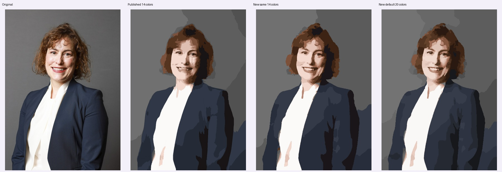
7.54 秒 · 新版 PNG · 同预算 14 色
照片署名
Lauren Hurley / No 10 Downing Street · OGL 3 · 来源22_portrait.jpg
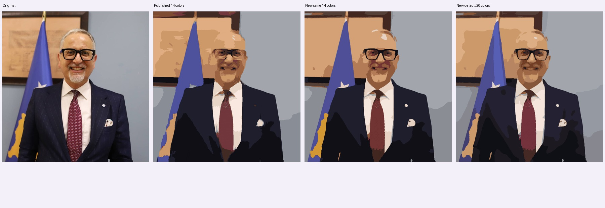
10.79 秒 · 新版 PNG · 同预算 14 色
照片署名
Ministria e Shëndetësisë e Republikës së Kosovës / Ministry of Health of the Republic of Kosovo · Public domain · 来源26_portrait.jpg
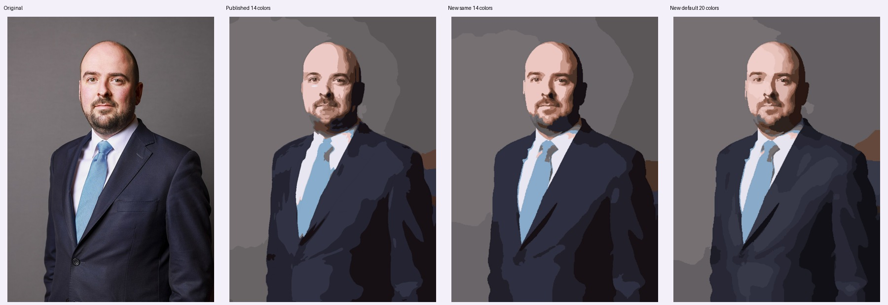
7.19 秒 · 新版 PNG · 同预算 14 色
照片署名
Lauren Hurley / No 10 Downing Street · OGL 3 · 来源27_portrait.jpg
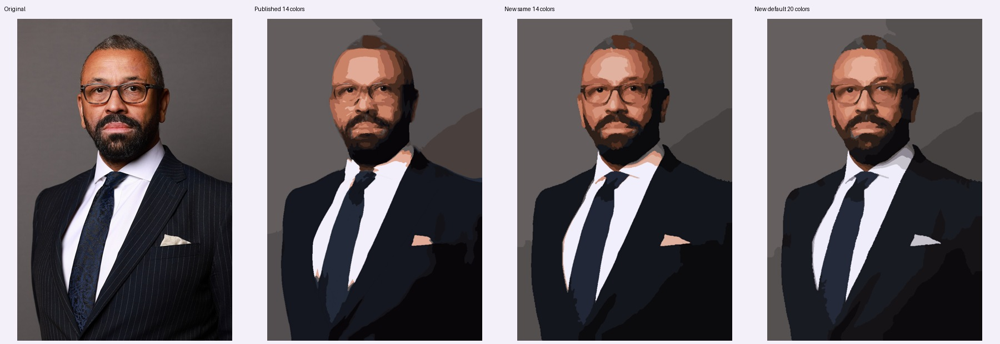
7.31 秒 · 新版 PNG · 同预算 14 色
照片署名
Lauren Hurley / No 10 Downing Street · OGL 3 · 来源28_portrait.jpg
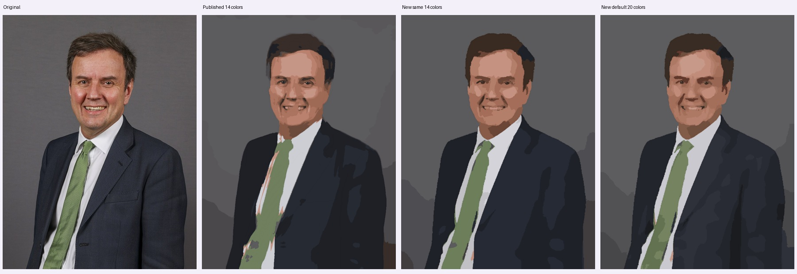
7.71 秒 · 新版 PNG · 同预算 14 色
照片署名
Rory Arnold / No 10 Downing Street · OGL 3 · 来源29_portrait.jpg
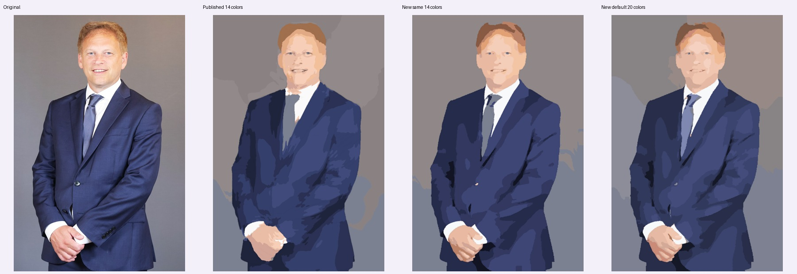
6.71 秒 · 新版 PNG · 同预算 14 色
照片署名
Alice Hodgson / No 10 Downing Street · OGL 3 · 来源